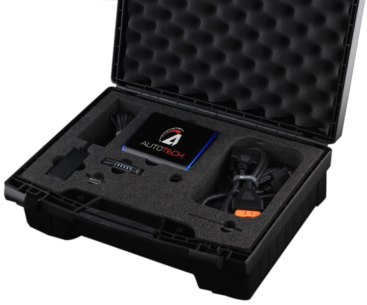
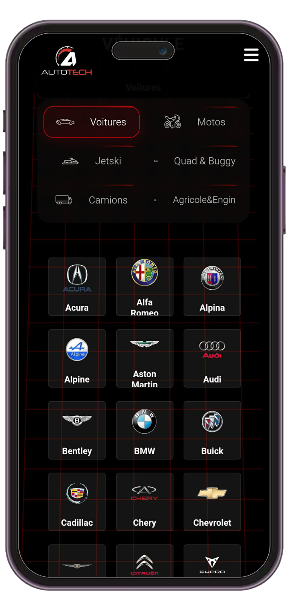

Devenir revendeur AUTOTECH
Envie de vous lancer dans la reprogrammation moteur ou de dynamiser votre activité actuelle ? AUTOTECH met à votre disposition son expertise, ses outils et ses fichiers développés sur banc de puissance pour vous accompagner au quotidien.
Rejoignez un partenaire spécialisé en optimisation moteur, avec un support technique réactif et une image forte auprès des passionnés d’automobile.

Chaque optimisation est développée et validée sur banc de puissance par AUTOTECH.
Bénéficiez d’un kit de démarrage sur-mesure et de haute qualité
AUTOTECH, la solution clé en main pour lancer ou dynamiser votre activité de reprogrammation moteur.

Outils et fichiers de reprogrammation
Nous travaillons avec les principaux outils de reprogrammation du marché (lecture OBD, bench, bootloader). Nous vous guidons dans le choix du matériel le plus adapté, puis dans son utilisation au quotidien.
Chaque fichier est préparé sur mesure par AUTOTECH en respectant les tolérances mécaniques et électroniques du constructeur. Les optimisations sont validées sur banc de puissance, afin de garantir un gain réel en puissance et en couple, tout en préservant la fiabilité et le confort de conduite.
Visibilité & image de marque
En tant que revendeur AUTOTECH, vous bénéficiez de notre image et de notre présence en ligne. Vos coordonnées peuvent être mises en avant sur nos supports afin de faciliter la prise de contact de vos futurs clients.
- Conseils sur la présentation de vos offres (Stage 1, Stage 2, E85...).
- Possibilité de mise en avant via nos réseaux sociaux.
- Textes et visuels prêts à l’emploi pour votre communication.
Processus en 5 étapes
AUTOTECH vous permet d’aborder un marché rentable autour de la reprogrammation moteur, tout en gardant un haut niveau de fiabilité et de qualité de service pour vos clients.
La reprogrammation consiste à optimiser les paramètres électroniques d’un véhicule afin d’obtenir plus de puissance, plus de couple et, dans de nombreux cas, une consommation en baisse. Chaque fichier est adapté individuellement à chaque véhicule.
Nous garantissons le bon fonctionnement de la cartographie et la possibilité de remettre le véhicule à l’état d’origine en cas de besoin (revente, mise à jour concessionnaire, etc.).
-
1. LectureBranchement de l’outil au véhicule et lecture du fichier d’origine du calculateur.
-
2. EnvoiTransmission du fichier d’origine à AUTOTECH via notre canal dédié (plateforme ou e-mail technique).
-
3. OptimisationModification du fichier par AUTOTECH en fonction du véhicule, de son état et de vos attentes (performance, confort, consommation).
-
4. RéécritureRéinjection du fichier optimisé dans le calculateur du véhicule avec l’outil de programmation.
-
5. TestEssai routier (et, si nécessaire, passage au banc) pour vérifier le bon comportement du véhicule et valider le résultat avec le client.
Prêt à devenir revendeur AUTOTECH ?
Parlez-nous de votre atelier, de vos clients et de vos objectifs. Nous construirons ensemble la meilleure façon d’intégrer la reprogrammation moteur dans votre activité.